Prin programele WeCare ne propunem sa promovam o Lume mai Buna, oferind sprijin celor ce au nevoie de ajutor si inspirandu-i si pe altii prin exemplul personal. Sunt peste 20 de proiecte WeCare in derulare, prin care anual sunt ajutati sute de copii.
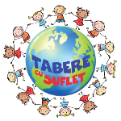
Zambet pentru toti Copiii este un program inceput in 2010. Scopul acestuia este promovarea unei Lumi mai bune, oferind copiilor un Zambet, impreuna cu sansa unei evolutii fizice, intelectuale si emotionale normale. Prin acest proiect copiii au acces gratuit la Programele Tabere cu Suflet, tabere si activitati de weekend cu diferite profile.Afla mai multe
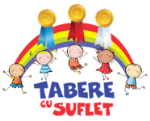
Excelenta Tabere cu Suflet este un program prin care rasplatim copiii cu rezultate deosebite la invatatura, precum si in activitatile extrascolare. Caci ei sunt viitorii lideri!Ne dorim sa avem exemple demne de urmat in Tabere cu Suflet, asa ca oferim reduceri la activitatile noastre copiilor cu rezultate deosebite:)
Afla mai multe
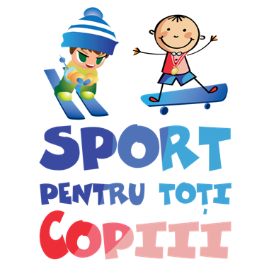
Sport pentru toti Copiii este un program care are ca obiectiv dezvoltarea sanatoasa, mentala si fizica, a copiilor. Prin acest program ne propunem sa promovam miscarea in natura in randul copiilor. De asemenea, pentru dezvoltarea competitivitatii, copiii sunt incurajati sa participe la activitati sportive si sa concureze la diferite competitii functie de nivelul lor de dezvoltare."Sportul nu înseamnă doar mişcare şi stil de viaţă sănătos. Sportul înseamnă Educaţie." - Gabriela Szabo
Afla mai multe
 Edu WeCare este un proiect al Asociatiei Tabere cu Suflet, prin care ne implicam in programe Educationale, atat online cat si offline, in Romania si in strainatate.
Edu WeCare este un proiect al Asociatiei Tabere cu Suflet, prin care ne implicam in programe Educationale, atat online cat si offline, in Romania si in strainatate.
"Ce impact extraordinar pot avea profesorii asupra viitorului!"
Afla mai multe
 Eco Wecare este un proiect prin care membrii Asociatiei Tabere cu Suflet se implica periodic in activitati de Ecologizare si de Constientizare. Sunt vizate zone si proiecte din Romania, dar si din strainatate!
Eco Wecare este un proiect prin care membrii Asociatiei Tabere cu Suflet se implica periodic in activitati de Ecologizare si de Constientizare. Sunt vizate zone si proiecte din Romania, dar si din strainatate!
Afla mai multe
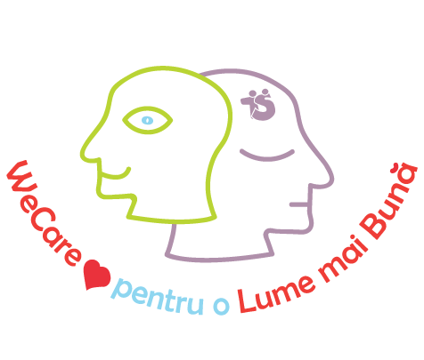
We Care pentru o Lume mai Buna este un proiect prin care incercam sa oferim sprijin, fara sa judecam, tuturor celor care ne cer ajutorul.Afla mai multe
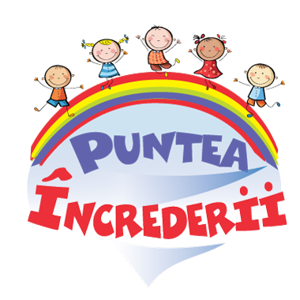
Puntea Increderii este un program creat pentru a creste gradul de incredere intre parinti, copii si organizatori! căci Tabara este o Punte a increderii, iar pentru a o construi, am creat mai multe oportunitati de a ne cunoaste!Afla mai multe
Jucarii pentru Copii este un program prin care, timp de 3 ani, peste 2000 de copii au primit jucarii, alimente si hainute. Programul a fost activ in perioada in perioada martie 2013 - decembrie 2015, iar in acest moment este suspendat din lipsa fondurilor.
Afla mai multe
 Garantie 100% este un program prin care oferim contravaloarea serviciilor platite persoanelor nemultumite! Aveti astfel 100% Garantia unei experienta memorabile si placute:)
Garantie 100% este un program prin care oferim contravaloarea serviciilor platite persoanelor nemultumite! Aveti astfel 100% Garantia unei experienta memorabile si placute:)
Afla mai multe
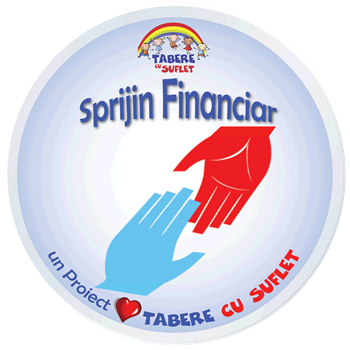
Sprijin financiar este un program prin care, in masura posibilitattatilor, oferim ajutor financiar celor aflati in nevoie.Afla mai multe
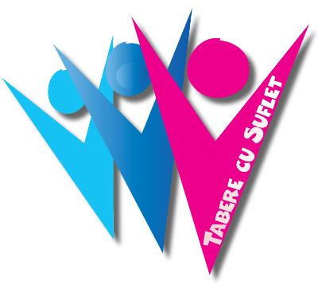
Cariere este un proiect WeCare al Asociatiei Nonprofit Tabere Cu Suflet, prin care sunt prezentate diferite cereri si oferte de angajare, cu scopul de a ajuta pe cei care cauta un loc de munca.Afla mai multe
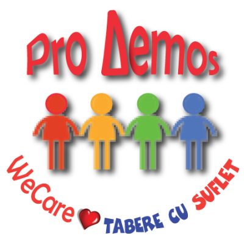
ProDemos este un proiect WeCare al Organizatiei non-guvernamentale Tabere Cu Suflet, care promoveaza o Lume mai Buna prin participarea activa la viata civica.Afla mai multe
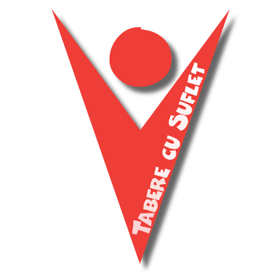
Sprijin pentru Voluntari este un proiect WeCare ce isi propune sa sustina Voluntariatul si sa recompenseze efortul si atitudinea celor care ofera, fara a astepta ceva in schimb.Afla mai multe
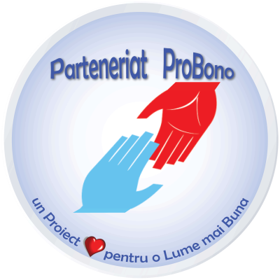
Parteneriat ProBono este un proiect WeCare prin care dorim sa transmitem firmelor un mesaj despre o Lume mai Buna. Cu sprijinul TeamXpert, oferim ajutor Partenerilor care considera ca au o anumita dificultate finaciara.Afla mai multe
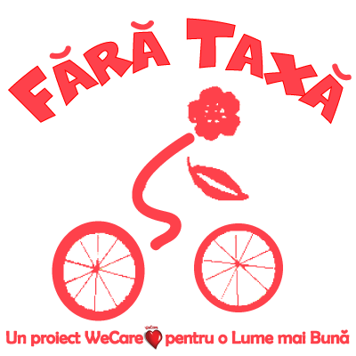
Fara Taxa este un proiect WeCare prin care persoanele cu venituri reduse si cele cu handicap pot beneficia de gratuitate la inscrierea la diverse competitii sportive.Afla mai multe
Info WeCare este un proiect WeCare prin care oferim ProBono diferite informatii, sau diseminam informatii pentru a ajuta diferite persoane aflate in nevoie, care ne contacteaza in acest scop.
Afla mai multe
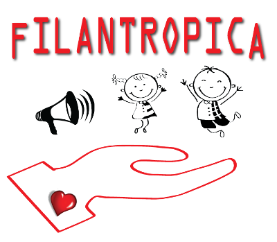
Filantropica este un proiect WeCare al Asociatiei Tabere Cu Suflet.Primim o multime de cereri de ajutor. Incercam sa raspundem la toate si pe multi ii ajutam. Daca nu o putem face, publicam cererile pentru ca si alti oameni inimosi sa poata ajuta la randul lor.
Afla mai multe
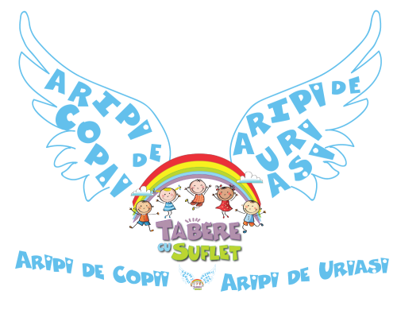
Aripi pentru Viitor este un proiect care are ca obiectiv dezvoltarea socio emotionala a copiilor si prin care ne propune sa le oferim acestora sprijinul necesar pentru a-i ajuta sa stea pe propriile picioare!Afla mai multe
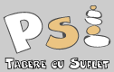
Cabinetul de Psihologie este un proiect care se concentreaza pe activitati de dezvoltarea senzoriala, intelectuala, afectiva si sociala a Copilului. In paralel cu aceste activitati, impreuna cu cativa parteneri, punem la dispozitie mai multe variante de consiliere psihologica, dezvoltare personala si gasire a echilibrului interior.Afla mai multe
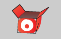
Obiecte Pierdute este un proiect prin care ajutam la gasirea lucrurilor uitate in tabere.Afla mai multe
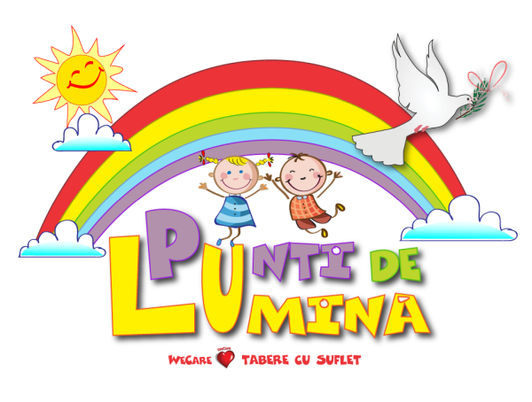
Punti de Lumina este un proiect prin care ne propunem sa construim o oaza de lumina, in care sa facem bine si sa sprijinim pe cei aflati in nevoie in vremuri de restriste (razboi, pandemie, calamitati naturale etc).Afla mai multe
Cine ne sponsorizeaza?
Sunt peste 20 de proiecte WeCare in derulare, prin care sunt ajutati anual sute de copii. In afara persoanelor care se implica voluntar, nu suntem sponsorizati de nimeni.
Fiecare donatie conteaza!